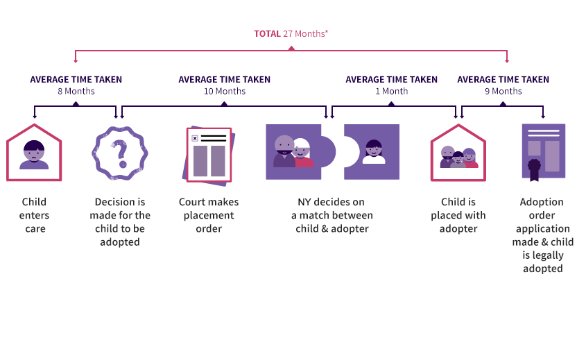

Adopting a child will take atleast 6 months from the application to the finalization of the process in court. Some parts of the process include submitting an application, conducting a homestudy process, working with a caseworker for an appropriate match, meeting the child if match is found, applying for subsidy and completing legalization of adoption in court. For further detail on each part of the adopting process, look into Office of Children and Family Services .
To get information on how to take care of a child as a first-time parent please check out Kidshealth.org. If you are adopting a child who is transitioning from foster care to adoption, refer to this guide: Helping Your Child Transition From Foster Care to Adoption
If you are seeking counseling for adoption concerns refer to: childwelfare.gov which will inform you on how to choose the right therapy depending on your adopting situation.